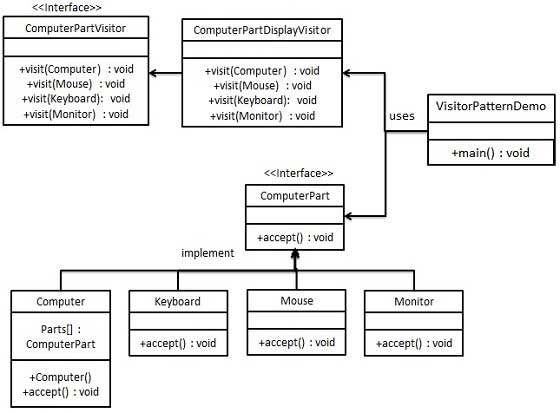

ビジターパターン
ビジターパターン（Visitor Pattern）では、訪問者クラスを使用して、要素クラスの実行アルゴリズムを変更します。このようにして、要素の実行アルゴリズムは訪問者に応じて変更できます。このタイプのデザインパターンは振る舞い型パターンに属します。このパターンに従い、要素オブジェクトは訪問者オブジェクトを受け入れ、訪問者オブジェクトが要素オブジェクトに対する操作を処理できるようにします。
紹介
意図
データ構造と、そのデータ構造上で実行される操作を分離することを目的としています。これにより、データ構造自体を変更することなく、新しい操作を追加しやすくなります。
解決すべき主な問題
- 安定したデータ構造と変化しやすい操作の間の結合問題を解決し、操作がデータ構造から独立して変化できるようにします。
使用シーン
- オブジェクト構造内のオブジェクトに対して、複数の異なる無関係な操作を実行する必要がある場合、特にこれらの操作がオブジェクトクラス自体を「汚染」するのを避ける必要がある場合。
実装方法
- 訪問者インターフェースを定義する一連の訪問メソッドを宣言します。各訪問メソッドはデータ構造内の1つの要素クラスに対応します。
- 具体的な訪問者を作成する訪問者インターフェースを実装し、各訪問メソッドに具体的な実装を提供します。
- 要素インターフェースを定義する訪問者を受け入れるメソッドを宣言します。
- 具体的な要素を作成する要素インターフェースを実装し、各具体的な要素クラスはデータ構造内の1つの具体的なオブジェクトに対応します。
重要なコード
- 訪問者インターフェース異なる要素にアクセスするためのメソッドが含まれます。
- 具体的な訪問者訪問者インターフェースを実装し、各要素クラスへのアクセスロジックを含みます。
- 要素インターフェース訪問者を受け入れるメソッドが含まれます。
- 具体的な要素要素インターフェースを実装し、訪問者がアクセスするための入口を提供します。
応用例
- 訪問シーン訪問者（あなたなど）が友人の家を訪問し、友人が要素として情報を提供し、訪問者が情報に基づいて判断を下します。
長所
- 単一責任の原則ビジターパターンは単一責任の原則に適合しており、各クラスは1つの責任のみを担当します。
- 拡張性データ構造に新しい操作を簡単に追加できます。
- 柔軟性訪問者はデータ構造から独立して変化できます。
短所
- デメテルの法則に違反要素は訪問者に内部情報を公開する必要があります。
- 要素クラスの変更が難しい要素クラスは訪問者との互換性を維持する必要があります。
- 具象クラスへの依存ビジターパターンはインターフェースではなく具象クラスに依存しており、依存性逆転の原則に違反します。
使用上のアドバイス
- オブジェクト構造が安定しているが、その上で複数の新しい操作を定義する必要がある場合は、ビジターパターンの使用を検討してください。
- 操作がオブジェクトクラスを「汚染」するのを避ける必要がある場合は、ビジターパターンを使用して操作をカプセル化します。
注意事項
- ビジターパターンは、レポート生成、ユーザーインターフェース表示、インターセプター、フィルターなどの機能を統一するために使用できます。
含まれる主要な役割
-
訪問者（Visitor）：
- 要素にアクセスするためのインターフェースを定義します。
-
具体的な訪問者（Concrete Visitor）：
- 訪問者インターフェースを実装し、各具体的な要素クラスへのアクセスと対応する操作を提供します。
-
要素（Element）：
- 訪問者を受け入れるメソッドを定義します。
-
具体的な要素（Concrete Element）：
- 要素インターフェースを実装し、訪問者がアクセスして操作できる
acceptメソッドを提供します。
- 要素インターフェースを実装し、訪問者がアクセスして操作できる
-
オブジェクト構造（Object Structure）（オプション）：
- 具体的な要素をどのように組み立てるかを定義します（例：コンポジットクラス）。
-
クライアント（Client）（オプション）：
- ビジターパターンを使用してオブジェクト構造を操作します。
実装
受け入れ操作を定義するComputerPartインターフェースを作成します。Keyboard、Mouse、MonitorとComputerを実装したComputerPartインターフェースのエンティティクラスです。別のインターフェースを定義します。ComputerPartVisitorこれは訪問者クラスの操作を定義します。Computerエンティティ訪問者を使用して対応するアクションを実行します。
VisitorPatternDemo、デモクラスはComputer、ComputerPartVisitorクラスを使用してビジターパターンの使い方をデモンストレーションします。

ステップ 1
要素を表すインターフェースを定義します。
ComputerPart.java
ステップ 2
上記のクラスを拡張したエンティティクラスを作成します。
Keyboard.java
Monitor.java
Mouse.java
Computer.java
ステップ 3
訪問者を表すインターフェースを定義します。
ComputerPartVisitor.java
ステップ 4
上記のクラスを実装したエンティティ訪問者を作成します。
ComputerPartDisplayVisitor.java
ステップ 5
を使用してComputerPartDisplayVisitorを表示するComputerの構成要素
VisitorPatternDemo.java
ステップ 6
プログラムを実行し、結果を出力します：
Displaying Mouse. Displaying Keyboard. Displaying Monitor. Displaying Computer.その他の拡張